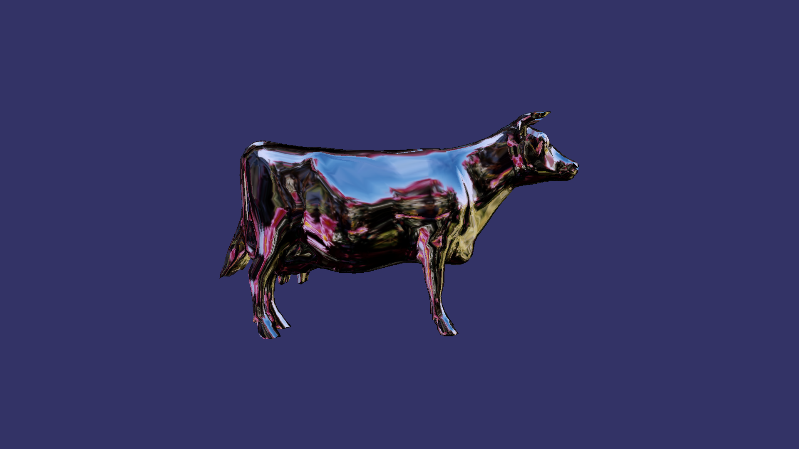

写在最前面
本文介绍了OSG及osgQT的编译及配置过程
系统环境
ubuntu: 16.04
CMake: 3.5.1
OSG: 3.5.7
OSG编译及配置
源代码下载、编译
源代码：Github链接1
2
3
4
5mkdir build
cd build
cmake -D BUILD_OSG_EXAMPLES=ON ..
make
make install
数据文件配置
数据文件下载：Github链接
解压存放，例如/home/<用户名>/Documents/OpenSceneGraph-Data
OSG环境变量配置
1 | sudo gedit /etc/profile |
在最末尾加上如下语句1
2
3
4
5#OSG
export LD_LIBRARY_PATH=$LD_LIBRARY_PATH:/usr/local/lib64
export PATH=$PATH:/usr/local/share/OpenSceneGraph/bin
export OSG_FILE_PATH=/home/<用户名>/Documents/OpenSceneGraph-Data
export OSG_DIR=/usr/local/lib64
分别为
- 添加OSG库路径到系统共享库路径
- OSG的一些可执行文件路径
- OSG的数据文件路径（根据实际存放位置修改）
- OSG动态链接库路径
执行source /etc/profile或重启以更新系统环境变量
至此OSG配置完成
测试
运行如下命令1
osgviewer cow.osgt
如显示以下图像则为测试成功

osgQT编译
源代码下载、编译
源代码：Github链接1
2
3
4
5mkdir build
cd build
cmake -D BUILD_OSG_EXAMPLES=ON ..
make
make install
测试
通过运行编译出来的例子验证是否配置成功
QT中使用OSG的CMakeLists.txt写法
并非完整写法，可供参考1
2
3
4
5
6
7
8## 增加OSG的依赖
FIND_PACKAGE(OpenSceneGraph REQUIRED COMPONENTS osgDB osgGA osgUtil osgText osgViewer osgWidget)
LIST(APPEND INCS_DIR ${OPENSCENEGRAPH_INCLUDE_DIRS})
FILE(GLOB OST_QT_LIB "/usr/local/lib64/libosgQt5.so")
LIST(APPEND LIBS ${OPENSCENEGRAPH_LIBRARIES} ${OST_QT_LIB})
INCLUDE_DIRECTORIES(${INCS_DIR})
TARGET_LINK_LIBRARIES(Project ${LIBS})
注：CMake中的FIND_PACKAGE(osgQT)测试无效，不清楚是不是版本问题